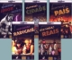

The Movies
Production: FEATURE FILMS | CO-PRODUCTIONS | SHORT FILMS | DOCUMENTARIES
Distribution: FEATURE FILMS | SHORTS COLLECTION | SHORT FILMS
Realization: TV SERIES | TV EPISODES | VIDEOS
Feature Films Produced by Casa de Cinema de Porto Alegre

|
FELICIDADE É (Happiness is...) |
BENS CONFISCADOS (Confiscated goods) |
Short Films Produced by Casa de Cinema de Porto Alegre
Documentaries Produced by Casa de Cinema de Porto Alegre
|
ESTA NÃO É A SUA VIDA (This is not your life) |
A MATADEIRA (The killing machine) |
|
VENTRE LIVRE (Liberation) |
Feature Films Produced by Casa de Cinema de Porto Alegre

Shorts Collections Distributed by Casa de Cinema de Porto Alegre
|
 CURTAS GAÚCHOS (Shorts on video) |
CURTAS DA CASA (Casa de Cinema's shorts onDVD) |
Short Films Distributed by Casa de Cinema de Porto Alegre
|
(The Wedding) |
|||||
|
|
TV Series made by Casa de Cinema de Porto Alegre
|
CENA ABERTA (Open scene) |
CONTOS DE INVERNO 2001 (Winter stories 2001) |
CONTOS DE INVERNO 2002 (Winter stories 2002) |
LUNA CALIENTE (Hot moon) |
TV Episodes made by Casa de Cinema de Porto Alegre

Videos made by Casa de Cinema de Porto Alegre